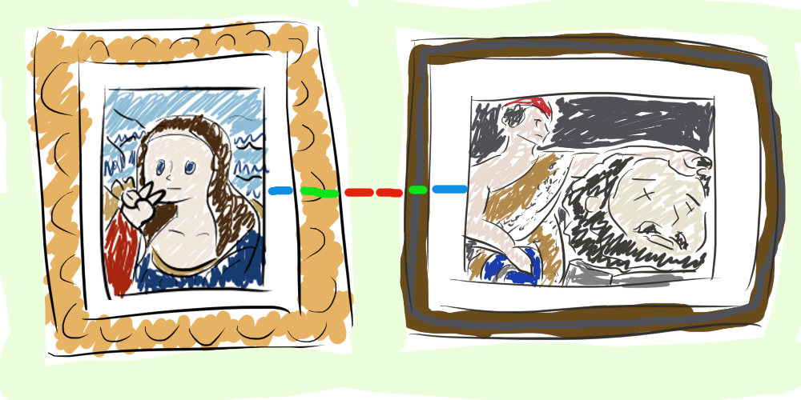
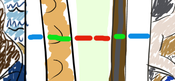

Margins, Borders and Padding
Hello friendly folks! Today we are going to be talking about Margins, Borders and Padding. What’s that, you may ask? They are things that you use to position and stuff on a webpage (or give it a border- y’know, coz border!) But you may be thinking- a webpage? I don’t make webpages! This is of no use to me. I won’t understand. Fear not! Your ol’ buddy Maxine is gonna break it down for you like a sick beat, chicka-wow. Enter the Large Enchanted Vehicle of Education and let’s GOOOOO!
We’re off to the Louvre. Imagine it. All these pretty paintings and pictures aligned neatly across the wall. There’s the Mona Lisa over there, looking a bit disappointing. And David with Goliath, also looking a little off today! Why are we here? Because, pally, I’m making a comparison! See how they have gaps between each piece, a frame, and then white surrounding the painting?

I’ll highlight those parts in red, green and blue respectively.
The red part is like the margin, green is the border (of course!) and blue is the padding. Each of these come together to artfully frame and arrange the content (being the painting, in this case) on the “page” (the wall!) so it looks nice and pleasing to the eye.
Margins- don’t you put that on bread?
The margin is the gap surrounding the border of the content- but wait! Sometimes there is no border! There is no frame on the painting! Ah- well giving something a margin is essentially pushing it away from other things on the page.
Borders- didn’t that store close?
Probably the most simple concept to understand, the frame around the content- and its padding (we’ll get to that soon!) Not always there and visible, but very useful when trying to move things around in the initial coding stages.
Padding- no comment!
So this pushes the border away from the content and also will increase the size of the element, so it grows bigger- like how the paintings in the above pictures seem bigger than they are because of the white space surrounding them!
Now not everything has to be equal either. You can mix and match the size of the top, bottom, left and right parts of the margin, border and padding as you wish- though it would look a little funky on a painting!
I hope you understand the difference more now! Okay, hop out the Large Enchanted Vehicle of Education, I only had it rented for half an hour.
BACK TO TOP